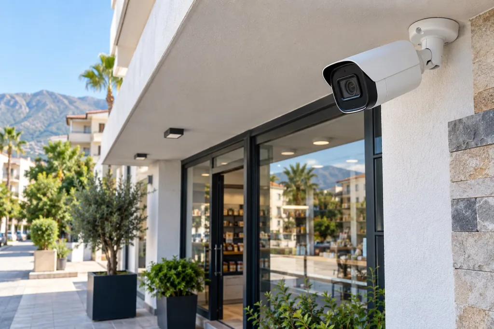

Kamera sistemi kurulumu
Kamera konumları, kayıt cihazı ve kablo planı kullanım amacınıza göre değerlendirilir.
Kurulumu inceleHatay geneli · Dörtyol merkezli
Eviniz ya da iş yeriniz için kamera sistemini ihtiyacınıza göre planlayın. Hatay genelinden gelen talepleri değerlendiriyor, Dörtyol dışındaki keşif ve kurulum uygunluğunu konumunuza göre netleştiriyoruz.

Kamera çözümleri
Her evin ve iş yerinin girişleri, kör noktaları ve kayıt beklentisi farklıdır. Önce neyi görmek istediğinizi belirleyin.
Kamera konumları, kayıt cihazı ve kablo planı kullanım amacınıza göre değerlendirilir.
Kurulumu inceleDükkan, ofis ve işletmelerde giriş, kasa ve ortak alanların izlenmesi için planlama.
İş yerleri içinEv, apartman girişi ve çevre alanları için izleme ve kayıt ihtiyaçlarını konuşalım.
Evler içinMevcut sisteminizde görüntü, kayıt veya uzaktan erişim sorunu varsa kontrol talep edin.
Destek seçenekleriGüven veren süreç
Kamera seçimi tek başına yeterli değil. Görüntü açısı, gece performansı, kayıt süresi ve internet üzerinden izleme birlikte düşünülmeli.
Nasıl ilerliyoruz?
İhtiyaç netleştikçe doğru sistem ve kapsamı seçmek kolaylaşır.
Ev mi iş yeri mi, hangi alanları izlemek istiyorsunuz? Kısaca anlatın.
Kamera konumu, kayıt ve izleme seçeneklerini alanınıza göre değerlendirin.
Ürün ve işçilik kapsamını anlayın; onayınızdan sonra kurulum planını oluşturun.
Yerel hizmet
Boztech Bilişim Dörtyol merkezlidir. Hatay genelinden gelen ev ve işletme taleplerini değerlendiriyor; keşif ve kurulum uygunluğunu paylaştığınız konuma göre netleştiriyoruz.
Hizmet bölgelerini inceleMerak edilenler
Keşif görüşmesinden önce aklınızdaki temel başlıklar.
İlçenizi, izlemek istediğiniz alanı ve kullanım amacınızı paylaşın. Keşif ve hizmet uygunluğu konumunuza göre netleştirilir.
Uygun kayıt cihazı ve internet bağlantısı bulunan sistemlerde uzaktan izleme kurulabilir. Cihaz uyumluluğu ve kurulum koşulları önceden kontrol edilir.
Kamera adedi ve özellikleri, kayıt süresi, kablo güzergâhı, montaj koşulları ve mevcut altyapı toplam kapsamı etkiler. İhtiyaç netleşince teklif hazırlanır.
Görüntü, kayıt veya uzaktan erişim sorununu ve cihaz bilgilerini paylaşarak destek talebi oluşturabilirsiniz. Müdahale kapsamı, sistemin durumuna göre değerlendirilir.
İlçe ve ihtiyacınızı paylaşın; keşif ve hizmet uygunluğunu birlikte netleştirelim.